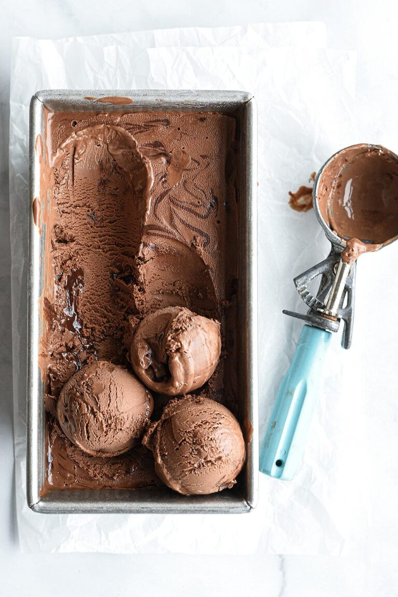

The best tasting ice cream in the galaxy"
Ingredients:
For the ice cream;
- 1 1/2 cups whole milk
- 1 1/2 cups heavy cream
- 3/4 cup (150 grams) granulated sugar, divided
- 1/4 cup (25 grams) unsweetened cocoa powder, preferably Dutch-process, sifted
- 1/4 teaspoon fine sea salt
- 1/2 teaspoon vanilla extract
- 8 ounces (227 grams) bittersweet or semisweet chocolate, melted
- 4 large egg yolks
For the fudge swirl:
- 1/4 cup plus 2 tablespoons heavy cream
- 1 tablespoon unsalted butter
- 1/4 cup (50 grams) granulated sugar
- 2 tablespoons packed light brown sugar
- 1/2 cup (85 grams) semisweet chocolate chips
- 1/8 teaspoon fine salt
- 1/2 teaspoon vanilla extract
Instructions:
- Prepare an ice bath by filling a large bowl with ice cubes and 1 to 2 cups of water. Place a medium bowl fitted with a fine strainer inside the ice bath.
- In a medium saucepan, combine the milk, cream, 1/2 cup sugar, cocoa powder, salt, and vanilla. Set over medium heat, stirring occasionally, until the mixture is warm and begins to steam, about 5 minutes. Stir in the melted chocolate.
- Whisk together the egg yolks and remaining 1/4 cup of sugar. Carefully whisk half of the warm milk mixture into the egg yolks, one ladleful at a time, until the egg mixture is warmed. Whisk the egg-milk mixture back into the saucepan. Cook the mixture over medium heat, stirring constantly with a wooden spoon, until the mixture is thick enough to coat the back of the spoon and registers around 175°F on an instant-read thermometer, about 5 to 7 minutes. Be careful not to boil the mixture.
- Immediately strain the mixture through the fine strainer into the prepared ice bath. Cool the custard in the ice bath until it reaches room temperature, stirring often. Press plastic wrap against the surface of the custard and refrigerate until chilled, about 4 hours or up to 1 day.
To make the fudge swirl:
- Heat the cream, butter, and sugars in a small saucepan over low heat. Bring the mixture to a boil and cook until the sugar dissolves, about 2 minutes. Remove from heat and stir in the chocolate chips. Let stand for 3 minutes before stirring completely smooth. Stir in the salt and vanilla. Let the mixture cool to room temperature before using. Fudge swirl can be stored in an airtight container in the fridge for up to 2 days. Bring to room temperature before using.
To finish the ice cream:
- Pour the mixture into an ice cream maker and freeze according to the manufacturer’s directions. Transfer the ice cream to an airtight container in batches, spooning the fudge swirl in between layers of ice cream in a swirled pattern. Press plastic wrap against the surface of the ice cream and freeze until it is firm, about 3 hours, before serving.
Return to top
Return to main page